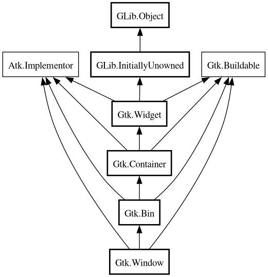

Window
Object Hierarchy:

Description:
[
CCode ( type_id =
"gtk_window_get_type ()" ) ]
public class Window :
Bin,
Implementor,
Buildable
Content:
Properties:
Static methods:
Creation methods:
Methods:
- public bool activate_key (EventKey event)
- public void add_accel_group (AccelGroup accel_group)
- public void add_mnemonic (uint keyval, Widget target)
- public void begin_move_drag (int button, int root_x, int root_y, uint32 timestamp)
- public void begin_resize_drag (WindowEdge edge, int button, int root_x, int root_y, uint32 timestamp)
- public void close ()
- public void deiconify ()
- public void fullscreen ()
- public void fullscreen_on_monitor (Screen screen, int monitor)
- public bool get_accept_focus ()
- public unowned Application? get_application ()
- public unowned Widget? get_attached_to ()
- public bool get_decorated ()
- public void get_default_size (out int width, out int height)
- public unowned Widget? get_default_widget ()
- public bool get_deletable ()
- public bool get_destroy_with_parent ()
- public unowned Widget? get_focus ()
- public bool get_focus_on_map ()
- public bool get_focus_visible ()
- public Gravity get_gravity ()
- public unowned WindowGroup get_group ()
- public bool get_has_resize_grip ()
- public bool get_hide_titlebar_when_maximized ()
- public unowned Pixbuf? get_icon ()
- public List<unowned Pixbuf> get_icon_list ()
- public unowned string? get_icon_name ()
- public ModifierType get_mnemonic_modifier ()
- public bool get_mnemonics_visible ()
- public bool get_modal ()
- public double get_opacity ()
- public void get_position (out int root_x, out int root_y)
- public bool get_resizable ()
- public bool get_resize_grip_area (out Rectangle rect)
- public unowned string? get_role ()
- public unowned Screen get_screen ()
- public void get_size (out int width, out int height)
- public bool get_skip_pager_hint ()
- public bool get_skip_taskbar_hint ()
- public unowned string? get_title ()
- public unowned Widget? get_titlebar ()
- public unowned Window? get_transient_for ()
- public WindowTypeHint get_type_hint ()
- public bool get_urgency_hint ()
- public WindowType get_window_type ()
- public bool has_group ()
- public void iconify ()
- public void maximize ()
- public bool mnemonic_activate (uint keyval, ModifierType modifier)
- public void move (int x, int y)
- public bool parse_geometry (string geometry)
- public void present ()
- public void present_with_time (uint32 timestamp)
- public bool propagate_key_event (EventKey event)
- public void remove_accel_group (AccelGroup accel_group)
- public void remove_mnemonic (uint keyval, Widget target)
- public void reshow_with_initial_size ()
- public void resize (int width, int height)
- public bool resize_grip_is_visible ()
- public void resize_to_geometry (int width, int height)
- public void set_accept_focus (bool setting)
- public void set_application (Application? application)
- public void set_attached_to (Widget? attach_widget)
- public void set_decorated (bool setting)
- public void set_default (Widget? default_widget)
- public void set_default_geometry (int width, int height)
- public void set_default_size (int width, int height)
- public void set_deletable (bool setting)
- public void set_destroy_with_parent (bool setting)
- public void set_focus_on_map (bool setting)
- public void set_focus_visible (bool setting)
- public void set_geometry_hints (Widget? geometry_widget, Geometry? geometry, WindowHints geom_mask)
- public void set_gravity (Gravity gravity)
- public void set_has_resize_grip (bool value)
- public void set_has_user_ref_count (bool setting)
- public void set_hide_titlebar_when_maximized (bool setting)
- public void set_icon (Pixbuf? icon)
- public bool set_icon_from_file (string filename) throws Error
- public void set_icon_list (List<Pixbuf> list)
- public void set_icon_name (string? name)
- public void set_keep_above (bool setting)
- public void set_keep_below (bool setting)
- public void set_mnemonic_modifier (ModifierType modifier)
- public void set_mnemonics_visible (bool setting)
- public void set_modal (bool modal)
- public void set_opacity (double opacity)
- public void set_position (WindowPosition position)
- public void set_resizable (bool resizable)
- public void set_role (string role)
- public void set_screen (Screen screen)
- public void set_skip_pager_hint (bool setting)
- public void set_skip_taskbar_hint (bool setting)
- public void set_startup_id (string startup_id)
- public void set_title (string title)
- public void set_titlebar (Widget? titlebar)
- public void set_transient_for (Window? parent)
- public void set_type_hint (WindowTypeHint hint)
- public void set_urgency_hint (bool setting)
- public void set_wmclass (string wmclass_name, string wmclass_class)
- public void stick ()
- public bool try_activate_default ()
- public bool try_activate_focus ()
- public void unfullscreen ()
- public void unmaximize ()
- public void unstick ()
Signals:
Inherited Members:
All known members inherited from class Gtk.Bin
All known members inherited from class Gtk.Container
All known members inherited from class Gtk.Widget
All known members inherited from class GLib.Object
All known members inherited from interface Atk.Implementor
All known members inherited from interface Gtk.Buildable